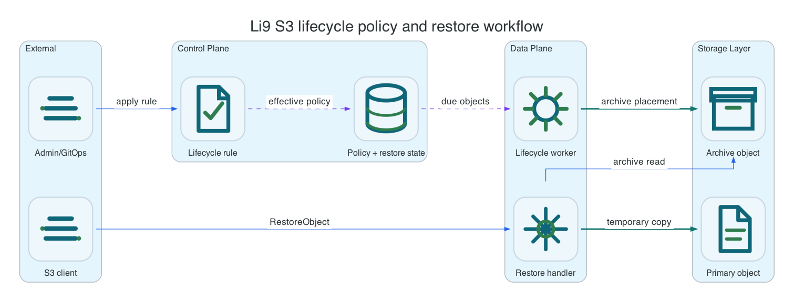

Lifecycle Policy And Restore Workflow
Use S3BucketLifecycle for raw AWS-compatible lifecycle XML and S3ArchivePolicy for Li9-owned archive rules. The storage-class names in XML are S3 API tokens for client compatibility; the archive placement is implemented locally by Li9 S3.
Common AWS CLI setup
Run this once for the target bucket. Replace li9-s3-runtime and app-data with your namespace and S3Bucket resource name.
export NS=li9-s3-runtime
export BUCKET_CR=app-data
export BUCKET="$(oc -n "$NS" get s3bucket "$BUCKET_CR" -o jsonpath='{.status.bucketName}')"
export SECRET="$(oc -n "$NS" get s3bucket "$BUCKET_CR" -o jsonpath='{.status.secretName}')"
export ENDPOINT="$(oc -n "$NS" get secret "$SECRET" -o jsonpath='{.data.AWS_ENDPOINT_URL}' | base64 -d)"
export AWS_ACCESS_KEY_ID="$(oc -n "$NS" get secret "$SECRET" -o jsonpath='{.data.AWS_ACCESS_KEY_ID}' | base64 -d)"
export AWS_SECRET_ACCESS_KEY="$(oc -n "$NS" get secret "$SECRET" -o jsonpath='{.data.AWS_SECRET_ACCESS_KEY}' | base64 -d)"
export AWS_REGION="$(oc -n "$NS" get secret "$SECRET" -o jsonpath='{.data.AWS_REGION}' 2>/dev/null | base64 -d || true)"
export AWS_REGION="${AWS_REGION:-us-east-1}"
export AWS_EC2_METADATA_DISABLED=true
li9s3() {
aws --endpoint-url "$ENDPOINT" --region "$AWS_REGION" --no-verify-ssl s3api "$@"
}To verify the setup, run:
li9s3 head-bucket --bucket "$BUCKET"
li9s3 list-objects-v2 --bucket "$BUCKET" --max-keys 1Lifecycle Policy And Restore Workflow
Use S3BucketLifecycle for raw AWS-compatible lifecycle XML and S3ArchivePolicy for Li9-owned archive rules. The storage-class names in XML are S3 API tokens for client compatibility; the archive placement is implemented locally by Li9 S3 on the configured archive PVC/path. The healing service applies lifecycle expiration, transition, restore completion, restore expiry, multipart-abort cleanup, and replication/reporting cycles.

RestoreObject creates a temporary readable copy until the restore window expires.| Interface | Best For | What The Runtime Does |
|---|---|---|
S3ArchivePolicy | Simple operator-managed archive rules by prefix. | Renders lifecycle transition XML and keeps status on the CR. |
S3BucketLifecycle | Full lifecycle XML, including filters, noncurrent versions, size bounds, and multipart cleanup. | Stores the AWS-compatible document and lets healing-service apply it. |
| S3 API | Applications or backup tools that already manage lifecycle through AWS CLI/SDK. | Persists compatible configuration and rejects invalid shapes before storage. |
cat <<EOF | oc -n "$NS" apply -f -
apiVersion: storage.li9.com/v1alpha1
kind: S3ArchivePolicy
metadata:
name: app-data-archive
spec:
s3BucketRef: $BUCKET_CR
storageClass: DEEP_ARCHIVE
prefixes:
- archive/
transitionAfterDays: 1
expireAfterDays: 30
EOF
oc -n "$NS" wait --for=condition=Ready s3archivepolicy/app-data-archive --timeout=10m
li9s3 get-bucket-lifecycle-configuration --bucket "$BUCKET"
printf 'archive candidate\n' > /tmp/archive.txt
li9s3 put-object --bucket "$BUCKET" --key archive/item.txt --body /tmp/archive.txt
li9s3 restore-object --bucket "$BUCKET" --key archive/item.txt --restore-request '{"Days":1,"GlacierJobParameters":{"Tier":"Standard"}}'Raw Lifecycle XML
Use raw XML when a bucket needs exact S3 lifecycle semantics such as noncurrent-version expiration, object-size filters, tag filters, or multipart abort rules. Keep these documents in Git and validate them with get-bucket-lifecycle-configuration after reconciliation.
cat <<'EOF' | oc -n "$NS" apply -f -
apiVersion: storage.li9.com/v1alpha1
kind: S3BucketLifecycle
metadata:
name: app-data-lifecycle
spec:
s3BucketRef: app-data
document: |
<LifecycleConfiguration>
<Rule>
<ID>abort-stale-multipart</ID>
<Status>Enabled</Status>
<Filter><Prefix>uploads/</Prefix></Filter>
<AbortIncompleteMultipartUpload><DaysAfterInitiation>7</DaysAfterInitiation></AbortIncompleteMultipartUpload>
</Rule>
</LifecycleConfiguration>
EOF
oc -n "$NS" wait --for=condition=Ready s3bucketlifecycle/app-data-lifecycle --timeout=10m
li9s3 get-bucket-lifecycle-configuration --bucket "$BUCKET"Restore Verification
Archive-class objects are not ordinarily readable until restore metadata is active. During restore, the runtime rehydrates shard payloads back to the original storage nodes. When the restore window expires, the healer clears restore metadata and removes the temporary primary copy.